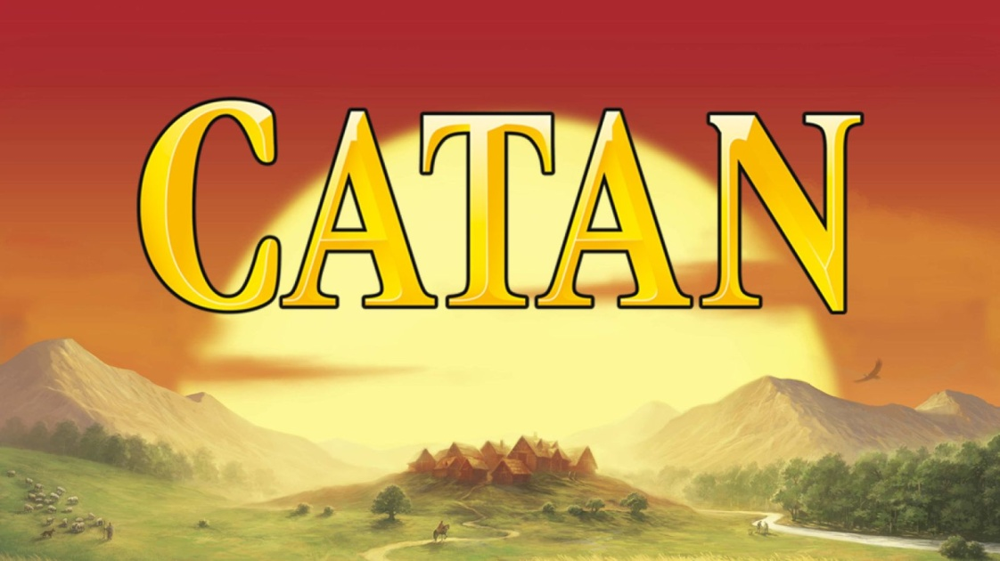
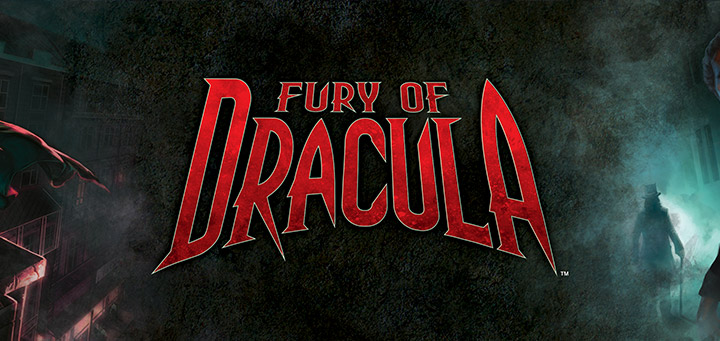
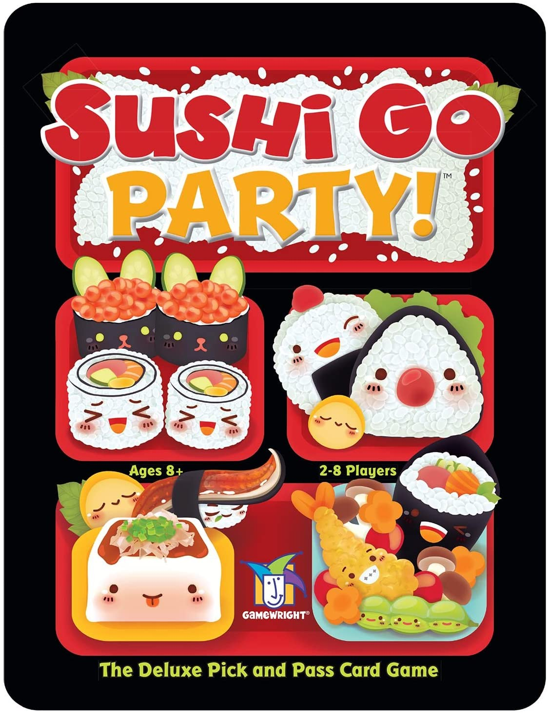
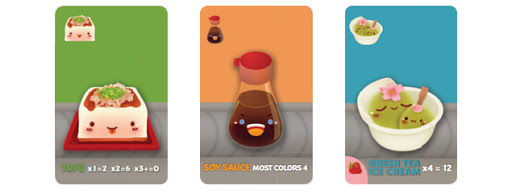

Come one come all thrill seeking adventurers and settle the lands of Catan!
Gather your friends and fight over land in this award winning strategy game. The game is meant for 3-4 players played on a hexagonal board made up of hexagonal tiles,
the board can be setup differently and randomly with each new playthrough with a total of over 200 billion board combinations. Between the strategy and the simplicity of the rules Catan
is an extremely replayable board game and a great choice for people just starting out in the board game world.
Read more

The east wind blows across europe. Sinister things are at work during the dark hours of the night, whispers of Dracula come back from the dead!
Gather your friends and escape from them while increasing influence and creating chaos across 1898 Europe. The game is for 2-5 players which features one antagonist player as Dracula
and four other players as his hunters. Definitely a complex and intriguing strategy game where there are two different sets of objectives. Either as Dracula to spread your influence and evade
or defeat the tenacious hunters, or as the hunters to track down the elusive vampire and kill him before he can have Europe in his grasp. Recommended for intermediate
players of the board game world, Fury of Dracula features several different actions spanning accross day and night cycles, highly replayable with each individual
character bringing a unique set of skills to the game.
Read more

Hope you're hungry because we have a full plater for the whole group!
Gather your friends and enjoy these delicacies as you fight to gain control of more points. This party game allows 2-8 players and several different menu combinations to spice
up that gameplay! A number of cards are drawn from the deck and starting with one player each person picks one of the cards in the hand and pass the hand down to the next person
until there is no more cards left and then score the points for that round. There are three rounds, so even if you're behind in any of the rounds there is still plenty of time to
catch up to your friends. With just a few minutes you can learn the game and play it! with the very simplistic action you take all you need to worry about is the strategy and your
hungy friends. Very replayable and extremely beginner friendly.
Read more
